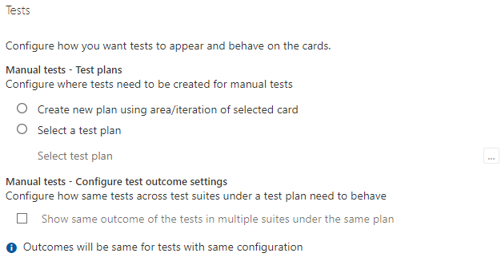

Azure DevOps Boards Cards - Tests Ayarları
Bazı örneklerle Azure DevOps Boards'daki "Cards - Tests" ayarlarını açıklayalım:
- Test Senaryoları: Kartlarda test senaryolarını görüntüleyebilirsiniz. Test senaryoları, yapılacak testlerin adı, açıklaması ve gereksinimleri gibi bilgileri içerebilir.
- Test Durumları: Kartlarda test durumlarını görüntüleyebilirsiniz. Test durumları, test senaryolarının hangi aşamada olduğunu veya tamamlanma durumunu gösterir (örneğin, "Başarılı", "Başarısız", "Devam Ediyor" gibi).
- Hatalar: Kartlarda hataları görüntüleyebilirsiniz. Hatalar, test sırasında bulunan kusurları veya sorunları temsil eder. Hataların ayrıntıları, öncelik seviyesi, atanan kişi ve çözüm durumu gibi bilgileri içerebilir.
- Test Sonuçları: Kartlarda test sonuçlarını görüntüleyebilirsiniz. Test sonuçları, testin başarılı, başarısız veya geçersiz olduğunu gösterir. Ayrıca test sonuçlarına ilişkin ayrıntılar ve yorumlar da ekleyebilirsiniz.
